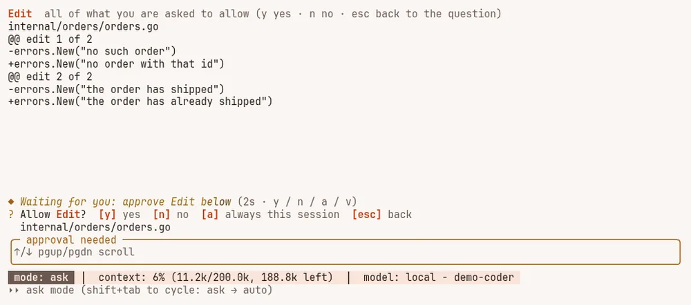
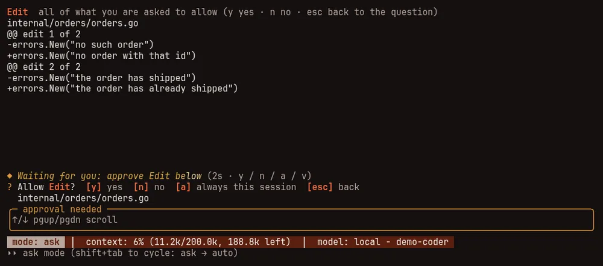

GuidesThe agent7 min read
Several edits, patches and renames #
On this page
Five tools help the agent change code in bigger steps than one replacement at a time, and find its way around a
project the way your editor does: multi_edit (several replacements in one file), apply_patch (one patch over
several files, for the models trained on that format), and three language-server tools, lsp_references (where a
symbol is used), lsp_symbols (what a file or the whole project declares) and lsp_rename (rename a symbol
everywhere it is used).
Each change is shown to you as one diff before anything is written, follows your edit_file rules, and is made
all or none: if one part cannot be made, nothing is changed.
In plain words #
- What they are. Ways for the agent to make a whole change in one go: several edits to a file, a patch over several files, or a rename the language server works out. And two ways to look things up: every place a name is used, and every name a file declares.
- Why you want them. One question for one change instead of five, a diff that shows the whole of it, and a
rename that changes the right
Configand leaves the otherConfigalone, because the language server knows which is which. - What you do. Nothing. They ask like
edit_filedoes. The language-server tools need a language server for your project's language (see Language servers);apply_patchis offered on its own to the models that write that format.
| Tool | Shown as | What it does | While planning |
|---|---|---|---|
multi_edit | Edit | Several exact replacements in one file, in order, all or none | Withheld |
apply_patch | Patch | One patch that adds, changes, moves and deletes files, all or none | Withheld |
lsp_rename | Rename | Renames a symbol everywhere it is used, as the language server works it out | Withheld |
lsp_references | References | Every place a symbol is used | Offered |
lsp_symbols | Symbols | A file's outline, or a search for names across the project | Offered |
The "Shown as" names are what the terminal and the phone app show for each call.
Several edits in one file: multi_edit #
The agent gives a file and a list of replacements. They are made in order, each against the file as the ones before it left it, so a later edit can change text an earlier one wrote. Each piece of text to replace must be found, and exactly once unless that edit says "every occurrence". If one is missing or appears twice, the call changes nothing and says which edit failed and why: the agent fixes that one and sends them all again.
You are asked once, with one diff for all of the edits. It is judged like edit_file: the same file limits
(file_policy), the same rules, and the same compile errors added to the result after it is written.
Patches: apply_patch #
OpenAI's GPT and Codex models are trained to edit code with patches in a format of their own (the "V4A" format,
the one Codex uses). When one of them is the model, Maple offers apply_patch so it can work the way it was taught:
*** Begin Patch
*** Update File: src/app.py
@@ def greet():
- print("hi")
+ print("hello")
*** Add File: notes/todo.md
+# Notes
*** Delete File: old/unused.py
*** End Patch- Who gets it.
harness.tools.apply_patchdecides:auto(the default) offers it to the models trained on it, told by the model's name (GPT-4.1 and later, GPT-5 and later, o3, o4, Codex models, gpt-oss);onoffers it to every model;offto none. Other models keepedit_fileandmulti_edit. - All or none. The whole patch is read first, strictly: a line that does not follow the format refuses the patch, and the message says which line. Then every change is worked out before anything is written; one that does not fit the file (its context lines are not there) refuses the whole patch. If writing a file fails part way, the files already written are put back.
- Paths stay in the project. Paths in a patch are relative to the project folder. An absolute path, a path that
climbs out with
.., and a path that leads out of the project through a link are refused, and so is any file your file limits keep the agent away from. One such file refuses the whole patch. - Deleting a file always asks. A patch that deletes a file asks you even in auto or yolo mode, and even where an
edit_fileallow rule would let an edit through. Only an allow rule written forapply_patchitself lets a deletion through without asking, and the same holds for a subagent's patches. The approval lists each file it deletes. A link is not deleted through: a patch deletes files by their own names.
Looking things up: lsp_references and lsp_symbols #
lsp_referencestakes a file, a line and a column (1-based, asread_filenumbers lines) and lists every place that symbol is used, with the line of code at each, sorted by file and line. Addinclude_declaration: falseto leave out where it is declared.lsp_symbolswith apathlists what the file declares as an outline: types, functions, methods, fields. With aqueryand no path it searches the whole project for names containing it. With both, it lists the file's symbols whose names contain the query.
Both only read, so plan mode offers them. Results come 100 to a page: the last line says how many there are and
which page to ask for next, so a name used thousands of times costs one page, not thousands of lines. Files the
agent may not read are not shown.
Renames: lsp_rename #
The agent names the symbol (a file, line and column) and the new name. The language server works out every edit the rename needs, across files, before you are asked. Then:
- You see the whole rename as one patch: every file, every changed line. Your rules are matched against every
file in it, so an
edit_filedeny rule for any of them refuses the rename. - Every file must be in the project and allowed for writing. If the server wants to change a file outside the project, or one your file limits protect, or wants to create, rename or delete files, the whole rename is refused and nothing is changed.
- All or none. The files are written together; a write that fails puts back the files already written. A file that changed on disk after the rename was worked out stops it before anything is written.
- What runs is what you approved. The rename applies exactly the edits you were shown.
A new name is one name: one with a space or a control character in it is refused.
Approvals and rules #
- Your
edit_filerules cover them. With no rule of its own,multi_edit,apply_patchandlsp_renamefollow your rules foredit_file(andapply_patch, which creates files, your rules forwrite_filetoo: the stricter of the two). A rule written for the tool itself decides first, but adenyrule foredit_filealways wins. Soedit_file(*/secrets/*)as a deny keeps all of them out ofsecrets/, and--deny-tool Editfor a run does the same. - A rule matches every file. For a patch or a rename, a file rule is matched against each file it touches, including both ends of a move, and the strictest answer wins.
- When nobody can answer. In a run nobody watches (
--prompt, A2A, a background agent), a question nobody can answer is refused, recorded, and the run goes on, as for any tool; your allow rules still let calls through. See Approvals nobody answers. - The
vkey on an approval in the terminal shows the whole change; the phone app shows it as a diff, file by file./changeslists every file these tools changed, with the lines added and removed.


v on the approval for several edits: every edit, before you answer. A demo setup with a scripted model.Settings #
| Setting | Default | What it does |
|---|---|---|
harness. | auto | auto: apply_patch is offered to the models trained on its format. on: to every model. off: never |
Change it with /settings (under Tools) or in config.yaml:
harness:
tools:
apply_patch: auto # auto, on or offTechnical details #
- Positions are 1-based lines and columns, the same numbering
read_fileshows. Language servers count columns in UTF-16 code units; the edits they send back are applied in those units, so a line with emoji or accented letters is changed in the right place. - Patch matching. Each
@@section is looked for after the one before it. An@@ textline first moves past the line holding that text (a function header, say). Context lines match exactly, then ignoring spaces at the end of a line, then ignoring spaces at both ends; the file's own spacing and line endings (LF or CRLF) are kept.*** End of Filemarks a change at the very end.*** Move to: pathafter an*** Update File:line moves the file. A file may be named only once in a patch. - Limits. A patch is at most 4 MB and 200 files;
multi_edittakes at most 100 edits; a rename changes at most 200 files. A worked-out rename waits up to 30 minutes for its approval. - Binary files are not patched or renamed in.
- Tested on Linux, with a scripted language server in the tests. Not yet run against every real language server, on macOS or on Windows.
See also #
- Language servers: installing one for your language.
- Approvals nobody answers: what happens when nobody can say yes.
- Plan mode: what the agent may use while planning.
- Configuration: every setting.